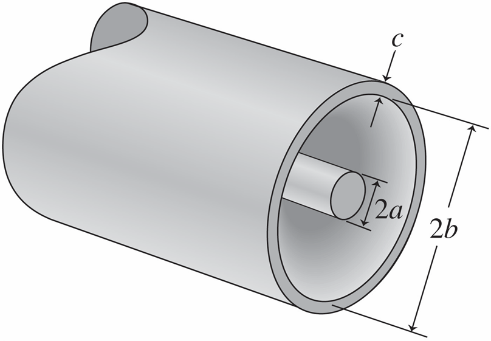
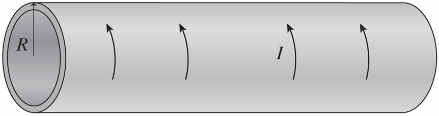
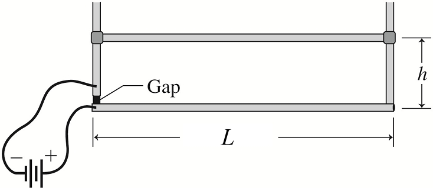

A wire with mass per unit length
g/m runs horizontally at right angles to a horizontal magnetic field. A
A current in the wire results in its being suspended against gravity ( Take $g = 9.8 m/s^2$ ). What's the magnetic field strength? (in unit mT)
calculateCalc!functionsequation
26.27
A
-m-long wire carrying
A is wound into a tight coil
cm in diameter. Find the magnetic field at its center. (In unit mT) ($μ_0 = 4 \pi \cdot 10^{-7} V*s/(A*m)$)
calculateCalc!functionsequation
26.45
A coaxial cable like the one described in the preceding problem and shown in figure has a =
mm, b =
cm, and c =
mm. The magnetic field strength at r =
cm from the central axis is
μT. Find the current I. (in unit A)

calculateCalc!functionsequation
26.48
A proton moving with velocity $\vec{v_1}$
$×10^4 \hat{j}$ m/s experiences a magnetic force of
$×10^{-16} \hat{i}$ N. A second proton moving on the x-axis experiences a magnetic force of
$×10^{-16} \hat{j}$ Find the magnitude of the magnetic field (assumed uniform). (in unit T)
calculateCalc!functionsequation
26.76
A long, hollow conducting pipe of radius R =
cm and length L =
cm carries a uniform current I =
A flowing around the pipe. Find the magnitude of the magnetic field inside the pipe. (in unit mT) You can assume the length L is much larger than the radius R.

calculateCalc!functionsequation
26.80
The structure shown in the figure is made from conducting rods. The upper horizontal rod (mass =
g, length =
cm) is free to slide vertically on the uprights while maintaining electrical contact. A battery connecting across the insulating gap at the bottom of the left-hand upright drives
A of current through the structure. At what height h (in mm) will the upper rod be in equilibrium?

calculateCalc!functionsequation